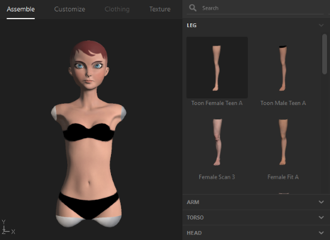
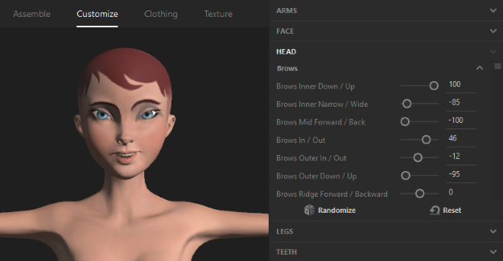
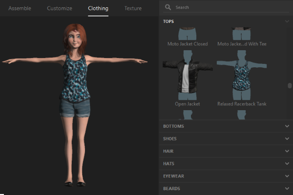
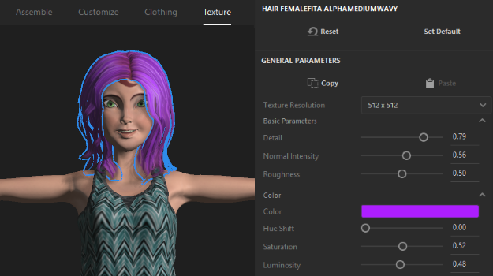

Tutorial: Create an Avatar with Fuse¶
Note
There are community reports where users are unable to easily open Adobe Fuse once installed. To work around this issue, open it multiple times successively until you are able to open the application.
Using Adobe Fuse, you can create a custom avatar. The default heads, torsos, arms and legs in Adobe Fuse can help you start your customization.
Launch Adobe Fuse.
Pick your default body parts. 
Click ‘Customize’. Here, you can customize the avatar. For example, you can customize how the eyebrows are shaped, facial expressions, how long the fingers are and much more. 
Click ‘Clothing’. Here, you can choose the clothing you’d like. In addition, you can set hair and facial hair options. In the next step, you will be able to modify the materials, colors, and textures of each clothing item you choose.
Click ‘Texture’. Here, you can modify your clothing choices with custom materials and colors. 
Save your avatar.
See Also